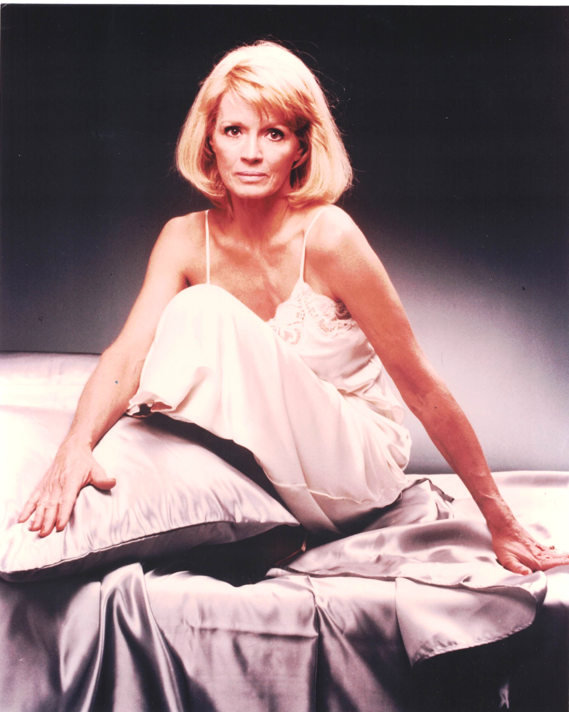

Product No. HEC-0067
$12.99
Shipping: $8.95
Description
8x10 color photograph
Full Description
Angie Dickinson is an American actress best known for her work in classic films and television, especially the popular crime drama "Police Woman." Born Angeline Brown on September 30, 1931, in Kulm, North Dakota, she began appearing on television during the 1950s before becoming a major Hollywood star. Dickinson gained wide recognition with her role as Feathers in the Western classic "Rio Bravo" (1959), starring John Wayne and Dean Martin. She later appeared in films including "Ocean's 11," "The Killers," "Point Blank," "Big Bad Mama," and "Dressed to Kill." Her combination of glamour, confidence, and dramatic ability made her a popular leading actress in both crime films and major studio productions. She became especially famous as Sergeant Suzanne "Pepper" Anderson in the television series "Police Woman," which aired from 1974 to 1978. The series was notable for featuring a woman as the central character in a serious police drama and helped make Dickinson one of television's most recognizable actresses of the 1970s. Her performance earned her a Golden Globe Award and several Emmy Award nominations. Dickinson also made numerous guest appearances on television and continued acting in films and television productions for decades. With a career spanning more than half a century, Angie Dickinson remains closely associated with classic Hollywood, the Rat Pack era, crime films, and 1970s television. Her photographs, autographs, and memorabilia remain popular with collectors of vintage Hollywood and classic television.
Condition
Excellent condition